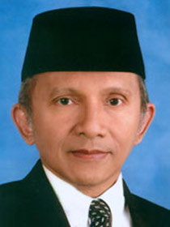

Amien Rais

Prof. Dr. H. Muhammad Amien Rais merupakan salah satu tokoh politik Indonesia yang mempelopori lahirnya reformasi. Nama beliau mulai mencuat seiring dengan akhir kejatuhan pemerintahan Orde Baru. Beliau lahir di Surakarta, Jawa Tengah pada 26 April 1944. Amien Rais adalah anak kedua dari enam bersaudara. Ayahnya bernama Suhud Rais dan ibunya bernama Sudalmiyah. Mereka dipandang sebagai keluarga religius yang masih mempertahankan nilai-nilai kesantunan Jawa. Ayahnya lulusan Perguruan Muallimin Muhammadiyah, sedangkan ibunya adalah ketua Aisyiyah di Surakarta. Beliau menempuh pendidikan di lingkup Muhammadiyah, mulai dari TK sampai SMA. Selama Sekolah, ia aktif dalam berbagai kegiatan organisasi.
Amien Rais kemudian mengambil kuliah di Fakultas ekonomi dan Ilmu Sosial dan Politik UGM pada jurusan Hubungan Internasional, yang diselesaikannya pada 1968. Selama kuliah di UGM, beliau terlibat dalam berbagai aktivitas gerakan kemahasiswaan. Amien Rais termasuk salah seorang pendiri ikatan Mahasiswa Muhammadiyah. Beliau pun pernah aktif di Himpunan Mahasiswa Islam, dan Lembaga Dakwah Mahasiswa islam HMI Yogyakarta. Setelah menamatkan kuliah di UGM, beliau melanjutkan pascasarjana di University of Notre Dame yang diselesaikan pada 1974 dengan memperoleh gelar MA. Beliau melanjutkan program doktoral di University of Chicago, dengan mengambil bidang studi Timur Tengah pada 1981.
Setelah pulang ke tanah air, beliau menjadi tokoh cendekiawan muslim yang disegani. Sebagai cendekiawan, i terkenal kritis dan menjaga jarak dengan pusat kekuasaan. Beliau banyak menyoroti ketidakadilan dan ketimpangan yang terjadi di masyarakat. Suaranya yang keras soal ketidakadilan membuatnya didaulat menjadi tokoh oposan di Indonesia. Beliau juga turut membidani lahirnya ICMI pada 7 Desember 1990. Tatkala memburuknya kondisi ekonomi Indonesia pada pertengahan tahun 1997, beliau gencar menyuarakan gerakan reformasi. Amien Rais dinilai sebagai tokoh yang paling depan dan paling keras mengkritisi pemerintahan Orde Baru. Beliau pulalah yang pertama kali melontarkan jargon KKN yang dianggapnya sebagai biang keladi carut marutnya kondisi Indonesia. Gerakan yang awalnya dipandang sebelah mata ini, ternyata mendapat dukungan luas dari segenap elemen masyarakat, mulai dari mahasiswa, karyawan, petani, buruh, dan lain lain. Gerakan reformasi tersebut akhirnya berhasil menjatuhkan kekuasaan Presiden Soeharto yang telah berkuasa lebih dari 30 tahun.
Amien Rais dikenal memiliki karisma tersendiri ketika beliau berbicara. Beliau mampu berbicara dengan jelas dan runtut karena kecerdasannya. Tanpa harus membaca satu teks, beliau mampu memukau banyak orang. Tokoh reformasi Indonesia ini memang tidak merasa takut berbicara apapun ketika menyuarakan kebenaran. Kebersihan hati dan hidupnya yang jauh dari hal-hal yang penuh noda telah menyelamatkannya dari berbagai ancaman dan tudingan terhadapnya. Bahkan tanpa beliau harus bersusah-payah mengadakan konferensi pers, beberapa tokoh lain telah membelanya. Itulah bedanya orang yang mantap berjalan di jalan yang lurus dengan orang yang selalu berusaha mematahkan perjuangan orang lain.
Kembali ke halaman bab 4